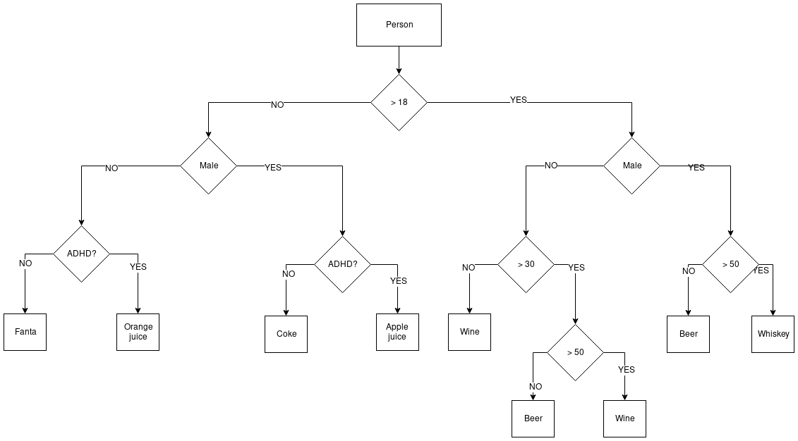

Arrowhead anti-pattern challenge
Just recently I had to work on a huge flow-chart to determine farm types based on the animal transports to and from farm locations. I started out with a small proof of concept but didn’t like the way it turned out. I did some research and learned I was basically creating a so called arrow head (“Arrowhead” anti-pattern ).
While it was nothing new, I never knew it was called arrowhead anti-pattern (or arrow anti-pattern).
There might be more than one solution to solve this problem and I was wondering if my colleagues could help me out so I wrote a challenge and dropped into our developers Slack channel.
Update 8 November 2019
added a bonus contribution from Bob, written in prolog
The Clean and Solid Challenge
Restaurant “The Cool Robot” is a restaurant with a cool robot as bar-tender. This robot is very efficient (although maybe a bit sexist) and will serve you a drink based on some simple rules.
While developing the robot a business analyst came up with the following flow-chart:

After an event-storming session the team came up with the following objects:
public class Person
{
public string FirstName { get; set; }
public string LastName { get; set; }
public Gender Gender { get; set; }
public int Age { get; set; }
public bool HasAdhd { get; set; }
}
public enum Gender
{
Male,
Female
}
The software
While developing the first version of the robot software the developers quickly ran into the “Arrowhead” anti-pattern:
public class BarTenderService
{
public string ServeDrink(Person person)
{
if (OlderThanEighteen.Satisfied(person))
{
if (GenderIsMale.Satisfied(person))
{
if (OlderThanFifty.Satisfied(person))
{
return "Whiskey";
}
else
{
return "Beer";
}
}
else
{
if (YoungerThanThirty.Satisfied(person))
{
return "Wine";
}
else
{
if (OlderThanFifty.Satisfied(person))
{
return "Wine";
}
else
{
return "Beer";
}
}
}
}
else
{
if (GenderIsMale.Satisfied(person))
{
if (HasAdhd.Satisfied(person))
{
return "Apple juice";
}
else
{
return "Coke";
}
}
else
{
if (HasAdhd.Satisfied(person))
{
return "Orange juice";
}
else
{
return "Fanta";
}
}
}
}
}
The Challenge
The developers did not have any clue about how to move forward and how to create an elegant and clean piece of software, keeping the SOLID principles in consideration. It seemed like a cool idea to have a challenge to give developers a change to show their ideas and solutions to this problem.
So, the challenge:
Refactor the code above.
The Price:
The most elegant solution (arbitrary!) will get forever, unlimited & free drinks at “The Cool Robot”!
The top 3 solutions (for now)
The completely independent jury had a few basic rules in mind:
The SOLID principles
Readability of the code, especially of the flows
Reusability and testability of the business logic
They did not consider speed or efficiency.
1. bob-final (Bob)
The winning solution because of its elegance. Readable flows, reusable business logic and quite SOLID.
Most applicable principles:
Single Responsibility: the service does not anything fancy, it just determines which drink to serve.
Open/Closed: new flows can be added, old flows can be changed or removed without changing the core service.
public class BarTenderService
{
private readonly ICollection<Spec<Person, string>> _flows;
public BarTenderService(ICollection<Spec<Person, string>> flows) =>
_flows = flows;
public string ServeDrink(Person person)
{
foreach ( var rule in _flows)
if (rule.Satisfies(person)) return rule.Result;
return "Water! :'(";
}
}
public static Spec<Person, string> FantaFlow = new Spec<Person, string>()
.WhereNot(Validators.IsAdult)
.WhereNot(Validators.IsMale)
.WhereNot(Validators.HasAdhd)
.ResultsIn("Fanta");
2. bitwise (Justin)
This version wins the second price because of the original solution. Although it is not really a SOLID solution the jury liked the idea of using bitwise operations to do the determination. Currently business rules are enforced as Extension Methods on the object Person but can be reused and tested. The only shortcoming is the current service, when new flows are added the service has to change thus violating the Open/Closed principle.
public class BarTenderService
{
private readonly IList<IRule<PersonState>> _rules;
public BarTenderService(IList<IRule<PersonState>> rules) =>
_rules = rules;
public string ServeDrink(Person person)
{
PersonState personType = 0;
if (person.IsEighteenOrOlder())
personType |= PersonState.EighteenOrOlder;
if (person.IsThirtyOrOlder())
personType |= PersonState.ThirtyOrOlder;
if (person.IsFiftyOrOlder())
personType |= PersonState.FiftyOrOlder;
if (person.IsMale())
personType |= PersonState.Male;
if (person.HasAdhdDisorder())
personType |= PersonState.HasAdhd;
foreach ( var rule in _rules)
{
if (rule.Predicate(personType)) return rule.Result;
}
return "Water! :'(";
}
}
public class AppleJuiceRule : IRule<PersonState>
{
public Predicate<PersonState> Predicate =>
personState => !personState.HasFlag(PersonState.EighteenOrOlder) &&
personState.HasFlag(PersonState.Male) &&
personState.HasFlag(PersonState.HasAdhd);
public string Result => "Apple juice";
}
3. validations (myself)
My own solution looks quite a bit like the winning solution but just loses at some specific points. I actually don’t like the readability of the validations in the rules. Besides that I introduced a new Interface and an extra abstract class and thus made it more complex than necessary.
public class BarTenderService
{
private readonly ICollection<IRule<Person>> _rules;
public BarTenderService(ICollection<IRule<Person>> rules) =>
_rules = rules;
public string ServeDrink(Person person)
{
foreach ( var rule in _rules)
{
if (rule.Predicate(person)) return rule.Result;
}
return "Water";
}
}
public class AppleJuiceRule : IRule<Person>
{
public Predicate<Person> Predicate =>
person => !new IsAdult().Validate(person) &&
new GenderIsMale().Validate(person) &&
new HasAdhd().Validate(person);
public string Result => "Apple juice";
}
public class HasAdhd : AbstractValidation<Person>
{
public override Predicate<Person> Predicate => person => person.HasAdhd;
}
General learnings
I really liked the response I received from my co-workers. Although they did not write any actual version, they really came up with some viable solutions. There were some small issues in the challenge though. I made some mistakes in the flow-chart and I missed some unit tests (no crucial tests but I forgot to test the scenario where adults were having A.D.H.D.).
As the saying goes, there are many ways to Rome. I don’t know if we have the best solution but I am happy with the final result. Thing is, it took me about 1.5 days of processing some ideas, trying some versions and helping my co-workers with their idea but at the end I had a working solution which I am using in a real piece of software.
Testing / Test data
Currently I am using the outcome of this challenge in a real project. While working on it I quickly realized the value of taking some time to design a good solution.
One of the benefits is testing and generating test data. The business rules can very easy be translated in test data:
public static Spec<ICollection<Animal>, string> SomeFlow = new Spec<ICollection<Animal>, string>()
.Where(Validators.MoreThanNinetyFivePercentYoungerThanOne)
.WhereNot(TransportValidators.MoreThanEightyPercentToSlaughter)
.Where(TransportValidators.MoreThanSeventyFivePercentIsYoungerThanThirtyOneWeeksAtTransport)
.ResultsIn("SomeCategory");
[Fact]
public async Task DetermineSomeCategoryFlowAllFlows()
{
var mockRepo = new Mock<IFunctionsRepository>();
mockRepo
.Setup(x => x.GetAnimals(It.IsAny<decimal>(), It.IsAny<DateTime>()))
.ReturnsAsync(TestData);
var service = new SomeService(mockRepo.Object, Flows.Items);
var result = await service.DetermineCategory(1234567, DateTime.Now);
result.Category.Should().Be(Flows.SomeFlow.Result);
}
// Rose Kalveren Starters
// + > 95% < 12mnd
// - > 80% SL
// - > Transport > 75% < 31wkn (217dgn)
private static ICollection<Animal> TestData()
{
var id = 1;
return new Faker<Animal>()
.RuleFor(animal => animal.Id, (faker, animal) => id++)
.RuleFor(animal => animal.DateOfBirth,
(faker, animal) => TimeProvider.Current.UtcNow.AddDays(-faker.Random.Int(90, 110)))
.RuleFor(animal => animal.Gender, "V")
.RuleFor(animal => animal.Reason, "EXP")
.Generate(100);
}
Complex decisions
Also, the different steps in each flow contain way more business logic than the bar-tender example but it still works like a charm:
public static Predicate<ICollection<Animal>> MoreThanNinetyFivePercentYoungerThanOne =>
animals =>
{
Guard.Against.NullOrEmpty(animals, nameof(animals));
var percentageYoungerThanOne = ((double) animals.Count(animal => animal.AgeInDays < 365) / animals.Count() ) * 100;
return percentageYoungerThanOne > 95;
};
Clean and understandable code
Debugging the solution and fine-tuning the rules is very easy, we tested the flow on real data in about 2 hours and made some small changes. I could even explain the logic of the code to the Product Owner so we could sit together and find small flaws in the flow by reading the code.
Any feedback?
Please let me know if you liked the article. Do you have any comment or better solutions? Did I forget something? Let me know, you can still be the winner of this challenge!
Bonus
Bob thought winning was not enough, he came up with an wrote an alternative solution in Prolog:
%% shorthand person fact constructor
:- discontiguous fname/2.
fname(Person, X) :- person(Person,X,_,_,_,_).
:- discontiguous lname/2.
lname(Person, X) :- person(Person,_,X,_,_,_).
:- discontiguous age/2.
age(Person, X) :- person(Person,_,_,X,_,_).
:- discontiguous gender/2.
gender(Person, X) :- person(Person,_,_,_,X,_).
:- discontiguous hasADHD/2.
hasADHD(Person, X) :- person(Person,_,_,_,_,X).
% generic truths about people:
isAdult(Person) :- age(Person, Age), Age >= 18.
isMale(Person) :- gender(Person, male).
hasADHD(Person) :- hasADHD(Person, true).
isMiddleAged(Person) :- age(Person, Age), Age > 30, \+ isVenerable(Person).
isVenerable(Person) :- age(Person, Age), Age > 50.
% now we can quickly define test people with ugly positional semantics ;)
person(bob, "Bob", "Klaase", 35, male, false).
person(mallegriet, "Malle", "Griet", 17, female, true). % => should drink orange juice
person(tammeknul, "Tamme", "Knul", 17, male, false). % => should drink coke
person(malleknul, "Malle", "Knul", 17, male, true). % => should drink apple juice
person(tammegriet, "Tamme", "Griet", 17, male, false). % => should drink fanta
person(wijnvrouw, "Wijn", "Vrouw", 28, female, false). % => should drink wine
person(biervrouw, "Bier", "Vrouw", 35, female, false). % => should drink wine
person(wijnOudevrouw, "Wijn", "Oudevrouw", 56, female, false). % => should drink wine
person(bierman, "Bier", "Man", 38, male, false). % => should drink wine
person(whiskeyman, "Whiskey", "Man", 56, male, false). % => should drink wine
%% query with:
%?- person(ID,FName,LName,Age,Gender,HasADHD).
%% now we can define drinking rules:
% minors:
drinks(Person, fanta) :- \+ isAdult(Person), \+ isMale(Person), \+ hasADHD(Person).
drinks(Person, orangejuice) :- \+ isAdult(Person), \+ isMale(Person), hasADHD(Person).
drinks(Person, coke) :- \+ isAdult(Person), isMale(Person), \+ hasADHD(Person).
drinks(Person, applejuice) :- \+ isAdult(Person), isMale(Person), hasADHD(Person).
% adult women
drinks(Person, wine) :- isAdult(Person), \+ isMale(Person), \+ isMiddleAged(Person). % this captures two groups
drinks(Person, beer) :- isAdult(Person), \+ isMale(Person), isMiddleAged(Person).
% adult men
drinks(Person, beer) :- isAdult(Person), isMale(Person), \+ isVenerable(Person).
drinks(Person, whiskey) :- isAdult(Person), isMale(Person), isVenerable(Person).
A cool solution with some nice side-effects. While the normal way to test would look like this:
?- drinks(mallegriet, Drink).
Drink = orangejuice
With this solution it is also possible to turn the rules around, I can now ask for all persons drinking wine:
?- drinks(Person, wine).
Person = wijnvrouw ;
Person = wijnOudevrouw ;